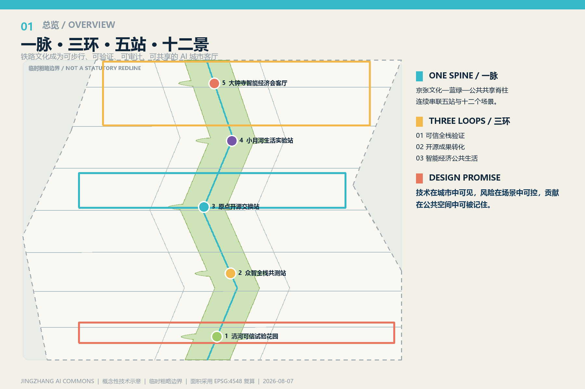
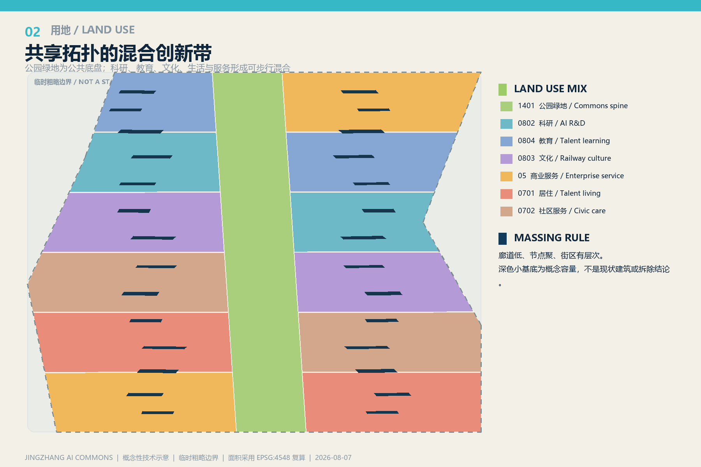
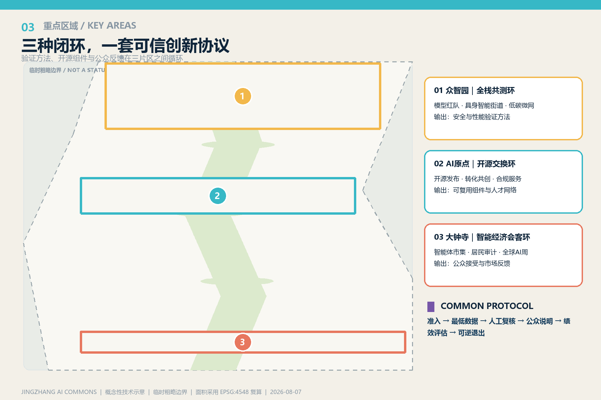
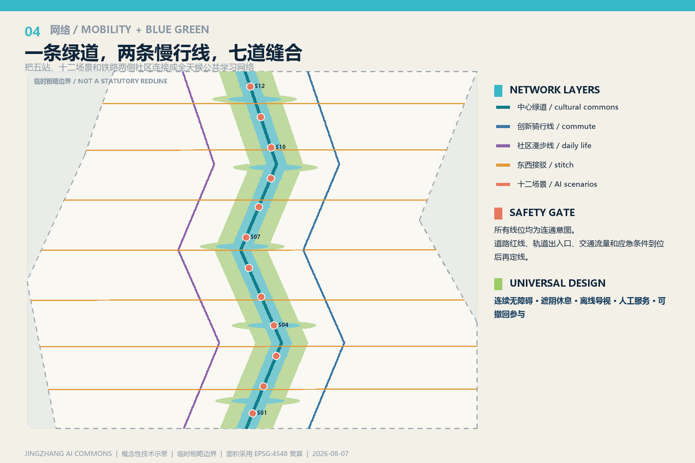
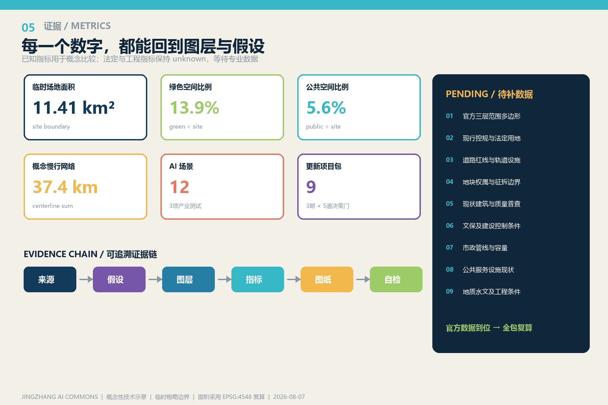

总览地图

设计命题
技术在城市中可见，风险在场景中可控，贡献在公共空间中可被记住。
三层范围
研究 43.6 km² / 总体设计约 11.4 km² / 三处重点区 368.4 ha。彩色设计结构与低对比度临时边界严格区分。
建筑
深色基底只表达概念容量；现状建筑、拆改留和强度等待专业数据。
三层范围与任务覆盖
研究层
全球AI生态、三类闭环、人才与未来城市。
总体层
用地、建筑、交通、市政、蓝绿、公共空间与更新项目。
重点层
众智园、北京AI原点社区、大钟寺的空间—运营原型。
用地分区与建筑

重点区域

交通慢行与蓝绿公共空间

蓝绿公共空间
一条中心绿道、两条平行慢行线、七条东西缝合线。无障碍、遮阴休息、离线导视和人工服务作为底盘。
更新项目
九个项目包按三期、五道决策门推进；每项都包含空间、运营、合规、绩效和退出。
AI 场景
可信测试 × 3
模型红队花园、具身智能共享街道、低碳微网沙盒。
开源转化 × 4
开源发布、成果共创、合规助手、AI教育。
公共生活 × 5
无障碍移动、居民审计、智能体市集、铁路叙事、全球AI周。
核心指标
临时场地面积11.41 km²
绿色空间比例13.9%
公共空间比例5.6%
概念慢行网络37.4 km

自检状态
结构与证据
任务覆盖、标准、深度、来源、假设和图层均有机器回链。
空间拓扑
用地完整覆盖且无面积重叠；面积在 EPSG:4548 复算。
精度警示
范围与重点区为临时粗略边界，不能作为法定红线或工程依据。
来源与假设
来源
- 官方征集公告
- 智能体任务书
- 城市设计管理材料
- 控制性详细规划材料
- 国土空间用地分类指南
- one-north
- Kendall Square
- MaRS
- STATION F
- Adlershof
- Maria 01
假设
临时边界控规待补道路待补建筑待普查文保待核市政待核
官方数据到位后，重新裁切九个图层、复算指标并再生成全部图纸。